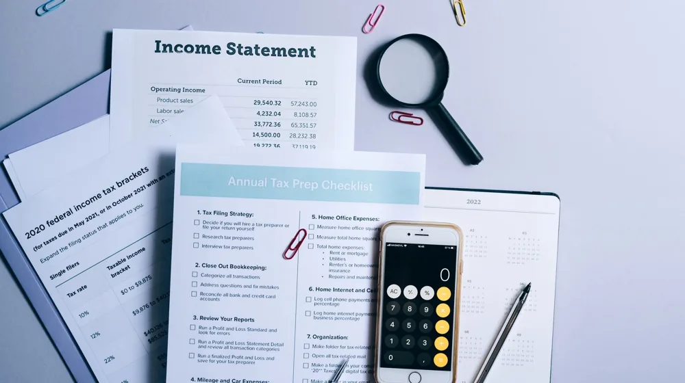

소상공인 정책자금 신청, 이것 놓치면 후회! 성공률 높이는 핵심 체크리스트
사진: RDNE Stock project / Pexels (무료 이미지, 출처 표기)
소상공인 정책자금, 왜 신청해야 할까요?

어려운 시기, 사업 운영에 필요한 자금을 정부로부터 지원받을 수 있다는 사실을 알고 계셨나요? 소상공인 정책자금은 일반 금융권 대출보다 유리한 조건으로 사업 안정화와 성장을 돕는 효과적인 수단입니다. 낮은 금리, 유연한 상환 조건, 그리고 특정 목적에 맞는 다양한 자금 지원 덕분에 많은 소상공인들이 활용하고 있습니다.
특히 신규 투자나 운영 자금 확보에 어려움을 겪는 경우, 정책자금은 사업의 중요한 전환점이 될 수 있습니다. 지금부터 정책자금 신청 전 반드시 확인해야 할 핵심 사항들을 자세히 살펴보겠습니다.
우리 가게도 받을 수 있을까? 소상공인 정책자금 자격 조건
소상공인 정책자금은 모든 사업자에게 해당되는 것은 아닙니다. 2026년 9월 기준, '소상공인기본법'에 따른 소상공인 정의와 함께 몇 가지 기본 조건을 충족해야 신청 자격이 주어집니다.
- 소상공인의 정의: 주된 사업의 종류별 상시근로자 수가 광업·제조업·건설업 및 운수업은 10명 미만, 그 외 업종은 5명 미만인 사업체여야 합니다.
- 사업자등록: 사업자등록을 완료하고 사업자등록증을 소지한 개인 또는 법인 사업자여야 합니다.
- 업종 제한: 유흥주점, 도박장 등 일부 사행성 및 특정 업종은 지원 대상에서 제외됩니다. 자세한 제한 업종 리스트는 소상공인시장진흥공단(소진공) 또는 중소벤처기업진흥공단(중진공) 홈페이지에서 확인할 수 있습니다.
- 대출 제한 사유: 휴업, 폐업 중이거나 국세 및 지방세 체납 중인 경우, 금융기관 대출 연체 중인 경우 등은 신청이 제한될 수 있습니다.
자격 조건은 정책자금의 종류에 따라 세부적으로 달라질 수 있으므로, 본인이 신청하려는 자금의 구체적인 요건을 공식 홈페이지에서 다시 한번 확인하는 것이 중요합니다.
필요한 서류는 미리미리! 신청 전 필수 준비물 체크리스트
정책자금 신청 시 제출해야 할 서류는 생각보다 다양합니다. 미리 준비해두면 신청 과정을 훨씬 수월하게 진행할 수 있습니다. 다음은 일반적인 소상공인 정책자금 신청 시 필요한 서류 목록입니다.
- 기본 서류:
- 사업자등록증명원 (홈택스 발급)
- 신분증 사본 (대표자)
- 사업장 임대차계약서 (자가인 경우 건물 등기부등본)
- 재무 관련 서류:
- 부가세과세표준증명 (최근 1~2개년, 홈택스 발급)
- 소득금액증명원 (최근 1~2개년, 홈택스 발급)
- 재무제표 (법인 사업자의 경우)
- 사업장 현황 확인서 (필요시)
- 사업 계획 관련 서류:
- 사업계획서 (사업의 목적, 내용, 성장 가능성, 자금 활용 계획 등 포함)
- 상환계획서 (대출금 상환 방안 구체적으로 제시)
- 기타 서류:
- (필요시) 담보 관련 서류 (부동산 등기부등본 등)
- (필요시) 기술 관련 서류 (특허증, 인증서 등)
제출 서류는 신청하는 자금의 종류, 신청 기관, 심사 상황에 따라 추가되거나 달라질 수 있습니다. 신청 전 반드시 해당 기관의 최신 공고문을 확인하여 누락 없이 준비하시길 권장합니다.
헷갈리는 정책자금 종류, 내게 맞는 건 어떤 것?
소상공인 정책자금은 용도와 목적에 따라 다양하게 나뉩니다. 자신의 사업 상황에 가장 적합한 자금을 선택하는 것이 중요합니다. 주요 정책자금의 특징은 다음과 같습니다.
각 자금별로 대출 한도, 금리, 상환 기간, 신청 요건 등이 상이합니다. 본인의 사업 계획과 재정 상황에 맞춰 가장 유리한 자금을 선택하기 위해 충분히 비교하고 전문가와 상담하는 것이 좋습니다.
신청부터 실행까지: 정책자금 프로세스 한눈에 보기
정책자금 신청 절차는 일반적으로 다음과 같은 단계로 진행됩니다. 각 단계를 미리 숙지하면 차질 없이 신청을 완료할 수 있습니다.
- 온라인 신청 및 접수: 각 정책자금 주관 기관(소상공인시장진흥공단, 중소벤처기업진흥공단 등) 홈페이지를 통해 온라인으로 신청서를 작성하고 서류를 접수합니다.
- 서류 검토 및 상담: 제출된 서류를 바탕으로 1차 적격 여부를 심사하고, 필요시 전화 또는 방문을 통해 추가 상담이 진행될 수 있습니다.
- 현장 실사 및 평가 (필요시): 사업장의 운영 현황, 사업 계획의 타당성 등을 확인하기 위해 현장 실사가 이루어질 수 있습니다. 특히 시설자금의 경우 실사가 필수적입니다.
- 대출 심사 및 승인: 서류, 상담, 실사 결과 등을 종합적으로 고려하여 대출 여부와 규모를 결정합니다. 신용등급, 사업성 등이 중요한 평가 요소가 됩니다.
- 대출 약정 체결 및 실행: 대출이 승인되면 금융기관과 대출 약정을 체결하고, 최종적으로 자금이 사업자 계좌로 입금됩니다.
각 단계별로 소요되는 시간은 자금의 종류와 기관의 업무량에 따라 유동적입니다. 여유를 가지고 신청을 진행하는 것이 좋습니다.
정책자금 신청 시 '이것'만은 주의하세요!
소상공인 정책자금은 사업 성장에 큰 도움이 되지만, 몇 가지 주의할 점을 간과하면 불이익을 받을 수도 있습니다. 다음 사항들을 유념하여 현명하게 자금을 활용하시길 바랍니다.
- 자금 용도 준수: 대출받은 자금은 반드시 사업계획서에 명시된 용도로만 사용해야 합니다. 용도 외 사용이 적발될 경우 대출금 회수 등의 불이익을 받을 수 있습니다.
- 중복 수혜 제한: 동일하거나 유사한 성격의 정책자금을 중복으로 신청하거나 수령하는 것은 제한됩니다. 자신이 받은 자금의 종류와 조건을 명확히 파악해야 합니다.
- 성실한 상환: 정책자금이라도 대출은 대출입니다. 약속된 기한 내에 성실하게 상환해야 하며, 연체 시 신용등급 하락 및 다음 정책자금 신청 시 불이익을 받을 수 있습니다.
- 신청 기간 엄수: 대부분의 정책자금은 정해진 신청 기간이 있습니다. 기간을 놓치면 다음 기회를 기다려야 하므로, 공고문을 수시로 확인하여 기한을 엄수해야 합니다.
- 정확한 정보 확인: 정책은 수시로 변경될 수 있습니다. 2026년 9월 기준 정보라 하더라도, 최종 신청 전에는 반드시 소상공인시장진흥공단, 중소벤처기업진흥공단 등 공식 기관의 최신 공고나 상담을 통해 정확한 정보를 확인하시길 권장합니다.
소상공인 정책자금은 사업자에게 큰 힘이 되는 제도입니다. 위 체크리스트를 바탕으로 꼼꼼하게 준비하여 성공적으로 자금을 확보하고, 사업을 더욱 발전시키는 계기로 삼으시길 바랍니다.
🔗 이 글도 함께 보면 좋아요: 기초연금 2026년 수급 자격, 놓치면 후회할 핵심 기준과 신청 방법